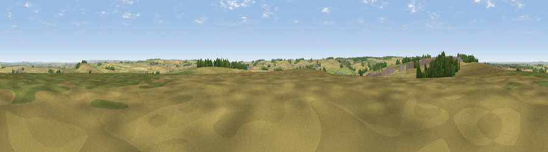

Several Down
#21036 in England · top 26% of its area beats it · near East IlsleyThe view, rendered

A 360° render of this exact spot computed from the terrain model, tree cover and land cover — summer colours, afternoon light, calibrated against photographs of famous viewpoints. Real trees, hedges and buildings will differ in detail.
The panorama
Grey silhouette: terrain skyline in each direction (720 bearings, Earth curvature and refraction included). Dashed green: skyline with trees (+15 m) and buildings (+8 m) as obstacles. Blue strip: how far the ground is visible on each bearing.
Where the view opens
Wedge length = distance to the farthest visible ground on that bearing (vegetation-aware). Rings at 10, 25 and 50 km.
What fills the view
64% cropland · 23% grassland · 10% woodland · 3% built-up
Angular shares of the visible panorama (visual magnitude), not map area. Landscape diversity 0.41 (0–1 Shannon).
Key numbers
More beautiful places nearby
The staircase of upgrades: each row has a higher view potential than everything closer. Driving times are estimates from straight-line distance, calibrated against real road routing — check an actual route before setting out.
| Place | Direction | Drive | Score |
|---|---|---|---|
| Hodcott Down | WNW · 1 km | ~4 min | 54.7 |
| Viewpoint near Blewbury | NE · 3 km | ~7 min | 60.8 |
| Viewpoint near Compton | E · 4 km | ~9 min | 64.1 |
| Castle Hill | NE · 12 km | ~22 min | 68.3 |
| Round Hill | NE · 12 km | ~22 min | 70.1 |
| Viewpoint near Woolstone | WNW · 20 km | ~34 min | 70.9 |
| Viewpoint near Woolstone | W · 20 km | ~34 min | 76.7 |
| Martinsell viewpoint | WSW · 37 km | ~56 min | 77.3 |
51.54210, -1.28117 · source: osm peak · position refined by local search. Computed location — check access rights before visiting.